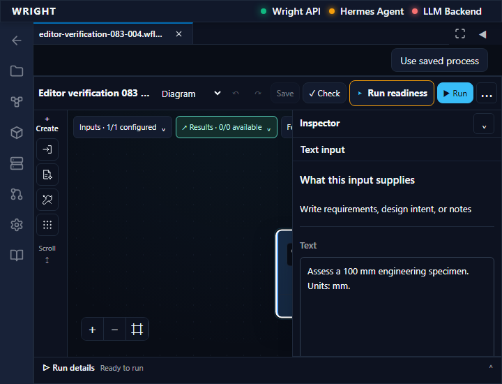
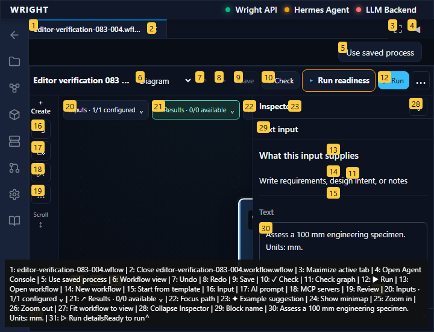
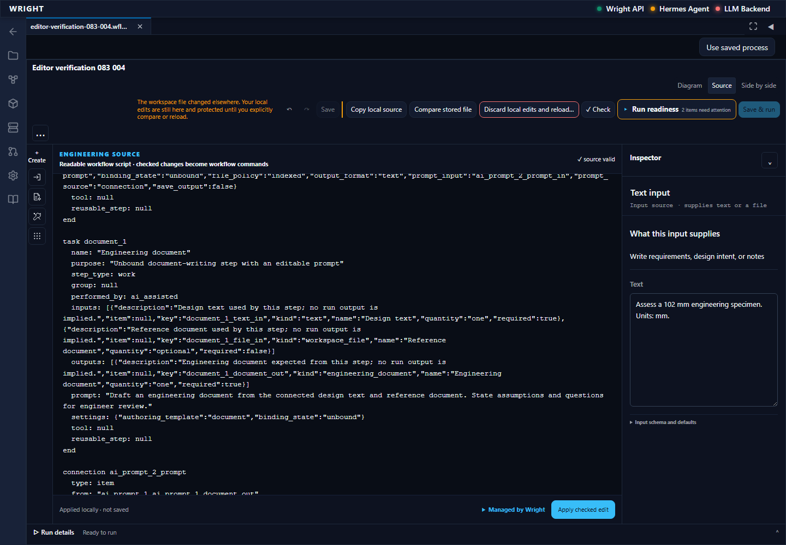
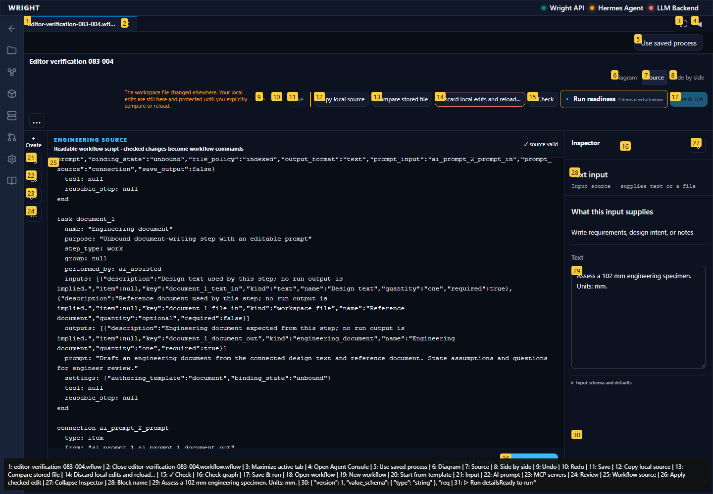

Continue the newly saved scratch workflow through type rejection, layout persistence, zoom and concurrent-save protection. No process execution or engineering review.
Status: pass
Measured visual viewport scale is 2; view selector, Fit control and keyboard-selected input inspector are available.
Expected: Compact view and keyboard inspector remain available.
Actual: Measured visual viewport scale is 2; view selector, Fit control and keyboard-selected input inspector are available.
raw 
annotated 
A real 409 conflict preserves the 102 mm local edit and the 101 mm concurrent saved edit.
Expected: Conflict retains local text and does not overwrite the other saved edit.
Actual: A real 409 conflict preserves the 102 mm local edit and the 101 mm concurrent saved edit.
raw 
annotated 